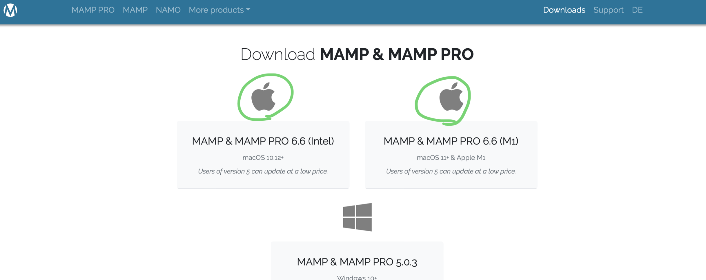

Hello!
・データベースを使用するためのソフト。
・これを使ってmysqlにデータを貯める。
・まず初めにソフトをダウンロードするために下記のリンクをクリック。
・MAMPダウンロードサイト

・Free downloadをクリック。

・適したバージョンを選択して、インストールを始める。
・インストールしたらMAMPを開く。
・緑丸の部分をクリックして動作をスタートさせる。
・緑ラインの部分が、皆さんはlocalhost:8888になっていると思います。
・このアドレスをlocalhostのみにしてシンプルにします。
・もう一度この部分を押して動作をストップさせます。
・左上のボタンをクリック。
・Portsをクリック。
・数値を画像の通りに入力し、OKを押してもう一度作動させると変わっています。

・試しにVisual Studio Codeでcreate.phpを作成してみましょう。
・そして、画像の通りに入力。
・次に適切な場所に保存します。
・Finderのアプリケーションをクリック。
・MAMPをクリック。
・htdocsをクリック。

・そこにcreate.phpを保存。
・SafariやGoogle Chromeを開いて、http://localhost/create.phpと入力。
・表示成功。
・今回はMAMPを導入しました。
・次回からは実際にデータベースを使用して行きたいと思います。
Fin.